img22 · SAM 2.1 guided cut-face mask
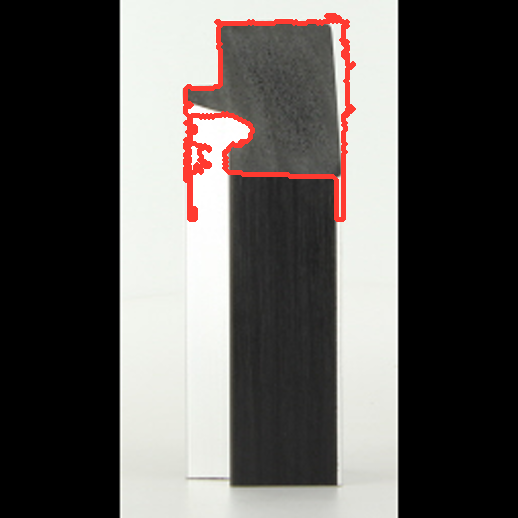
held-out P95 8.574 mm
RESEARCH-ONLY · ORIGINAL VGGT CHECKPOINT · RENDERER UNCHANGED
The recovered relief is not stable enough across held-out supplier views.
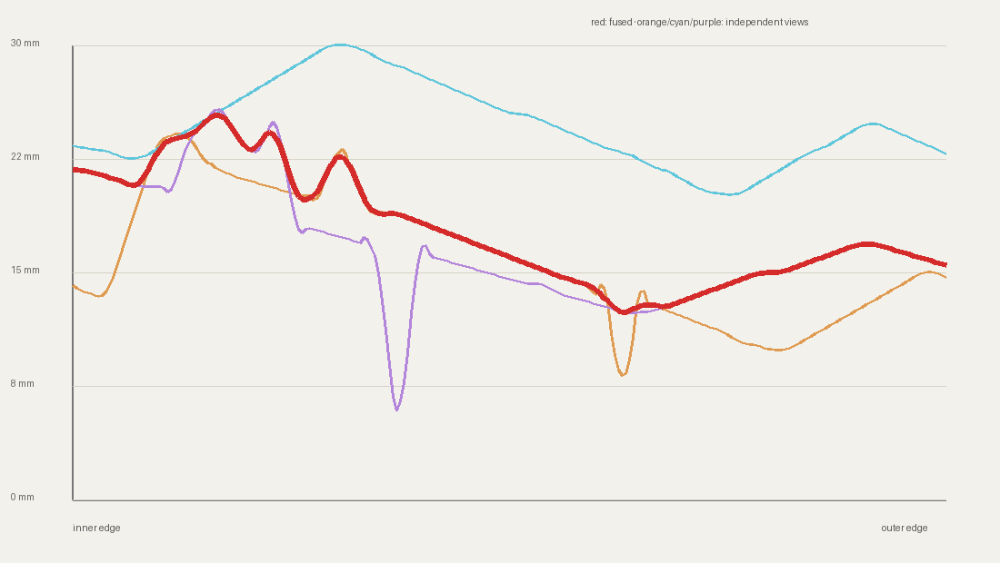
Worst held-out P95: 12.409 mm · observed relief: 11.995 mm

held-out P95 8.574 mm
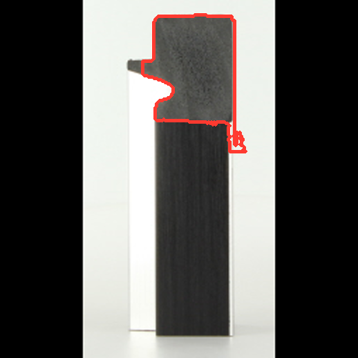
held-out P95 12.409 mm
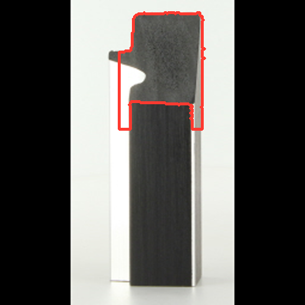
held-out P95 9.157 mm
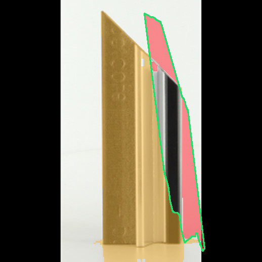
silhouette IoU 0.151 · green prediction, amber missed, red excess
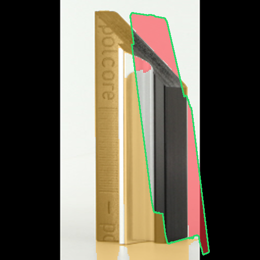
silhouette IoU 0.332 · green prediction, amber missed, red excess
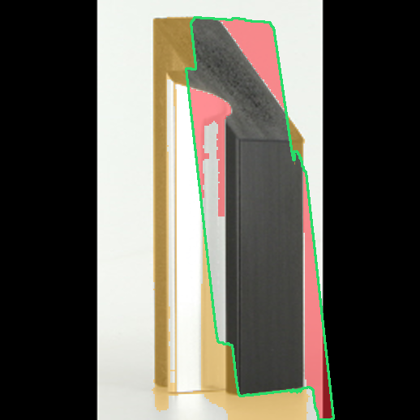
silhouette IoU 0.574 · green prediction, amber missed, red excess
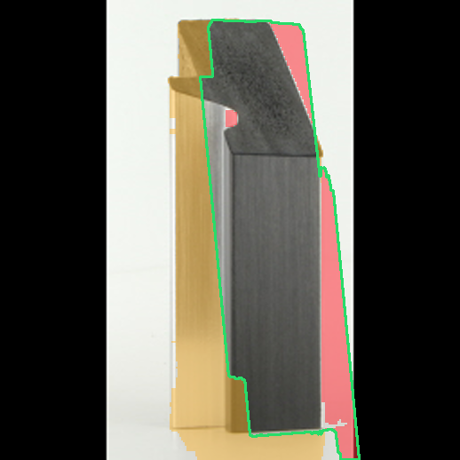
silhouette IoU 0.571 · green prediction, amber missed, red excess
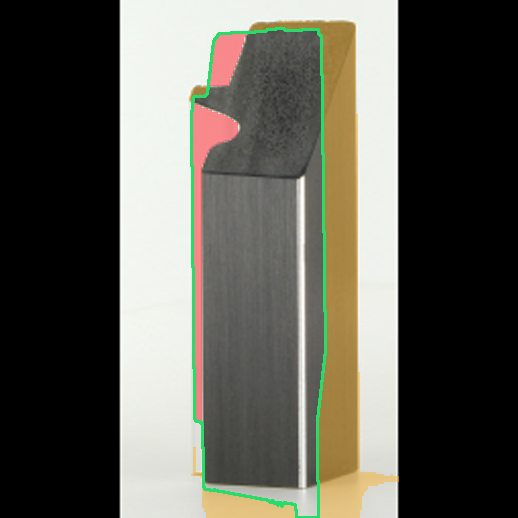
silhouette IoU 0.669 · green prediction, amber missed, red excess
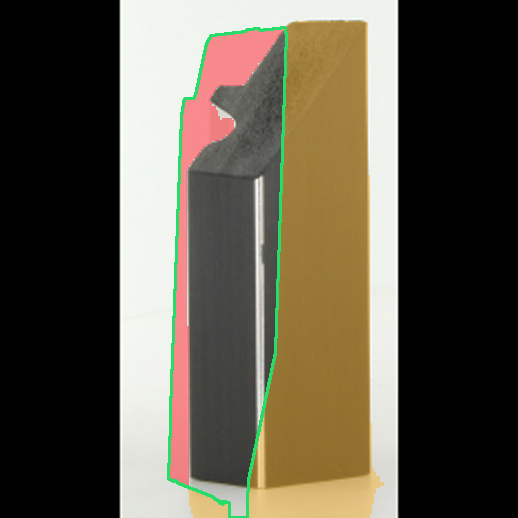
silhouette IoU 0.37 · green prediction, amber missed, red excess
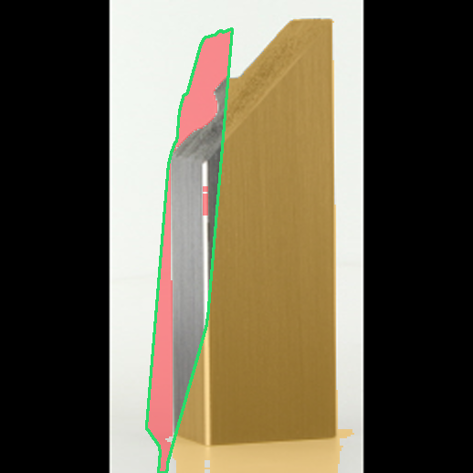
silhouette IoU 0.148 · green prediction, amber missed, red excess
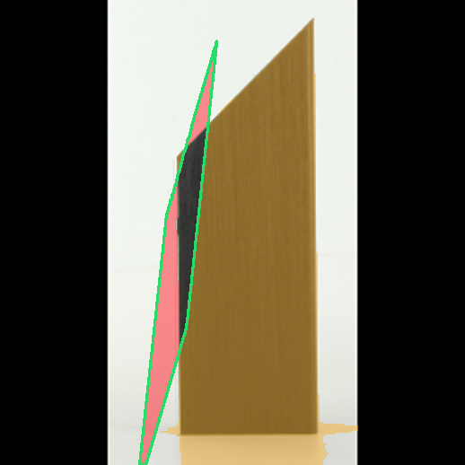
silhouette IoU 0.06 · green prediction, amber missed, red excess
No visualiser or Three.js files were read or changed by this stage.